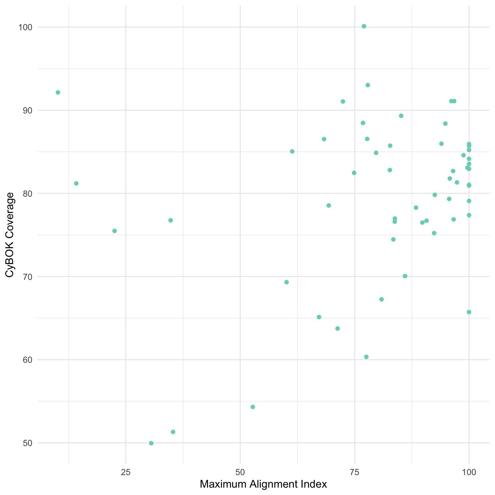
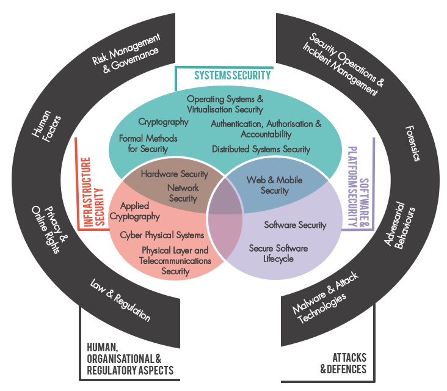

{kind=link}

4 Classifications and Diversity of Expertise
4.1 Thinking through classifications
‘To classify is human’ (Bowker and Star 1999). Standardisation smoothes out frictions: if everyone is using the same gauge of wire, the same protocols for communication, the same terminology to refer to the same thing, then the conditions are in place for collaboration and integration, and for a low risk of unforeseen complications. A classification system, can be defined, according to Bowker and Star, as ‘a set of boxes (metaphorical or literal) into which things can be put to then do some kind of work’ (Bowker and Star 1999). Devising a classification of cyber security expertise has been one of the earliest projects for the cyber security profession. The CyBOK project did this, via a large mapping exercise that ingested a wide body of data, and input from practitioners, policymakers and academics, to generate a system of 19 ‘Knowledge Areas’, published in 2019, rising to 21 in the 2021 revision (Martin et al. 2021).

CyBOK enables work to happen that would otherwise be very difficult. It provides, for instance, a framework for assessing and communicating the content of cyber security degree programmes, or for mapping out the research profiles of cyber security scholars within a university. It provides a common terminology for making comparisons and building up composite profiles.
The UKCSC created its own classification system of 15 specialisms. Where CyBOK focuses on ‘knowledge areas’, the UKCSC specialisms are intended to map onto types of cyber security job role. Each knowledge area may be relevant to many specialisms, and each specialism may require several knowledge areas. As part of its cyber careers framework, the UKCSC provided a mapping of CyBOK to the specialisms, using four levels of relevance (‘core’, ‘related’, ‘wider’ and non-relevant). Security Operations & Incident Management is the most well represented knowledge area within the UKCSC Careers Framework, core to 6 specialisms, followed by Law & Regulation, which is core to 4 specialisms. Three knowledge areas are not ‘core’ for any specialisms: Human Factors, Operating Systems and Virtualisation Security, and Physical Layer and Telecoms Security1. Quite what, if anything, one should read into this is unclear: are these areas that are deemed less ‘in demand’ by industry? Or are they considered too specialist for the kind of typology that the Careers Framework is bringing together?
1 Formal Methods and Applied Cryptography are not included due to being added in the 2021 CyBOK 1.1 update.
All classification systems have downsides. One downside is the propensity to create path dependencies. Classification systems are a kind of knowledge infrastructure, and like all infrastructure, once other systems come to depend on them, the costs of changing things later on can be high, leading to slow, incremental change and incentives against radical redesign. We encountered this challenge in our research. Our effort to expand the scope of our analysis by adding 5 new categories alongside the standard CyBOK KAs created challenges: because only the original KAs are mapped to the UKCSC specialisms, we could not incorporate new categories in our alignment calculations. Established classifications in this way condition which questions are easier and which are harder to answer.
Another downside is the fact that in prioritising some differences as the basis of their scheme, classification systems make other differences less visible. This can lead to ‘blindspots’ (to take the metaphor seriously, a blindspot is more than a gap in the visual field, it is a gap that cannot easily be perceived as a gap2). CyBOK was developed through a collaborative process that aimed to capture established knowledge areas in cyber security. While this process recognised the relevance of the social sciences to cyber security, much of the diversity of social scientific knowledge was bundled into the ‘human factors’ category. The differences in explanatory approaches across psychology, sociology, economics, organisation studies, design and anthropology therefore become harder to see. Social scientific expertise becomes invisible in the UKCSC Careers Framework, since human factors here are treated as ‘soft skills’. What was initially marginal can thus become increasingly invisible as classifications compound.
4.2 Data analysis
4.2.1 Personal expertise within and beyond CyBOK
When we asked respondents to rate their expertise and the expertise required for problem scenarios, we gave them 5 additional categories beyond those that are included in CyBOK 1.1 (Martin et al. 2021). We developed these based on discussions during the survey design process with stakeholders from government and industry, and we selected 5 to address:
Areas that are growing in prominence, since CyBOK was first devised, and likely to continue growing. We thus included Data Science/AI for cyber security. AI has been considered through a CyBOK ‘topic guide’ and ‘knowledge guide’, but as yet does not have the status of a knowledge area.
An area that is well established but happened to be left out from CyBOK. Cloud Security was excluded from consideration within the Network Security knowledge area. Related considerations are included within Operating System and Virtualisation Security, but the lack of prominence within CyBOK is notably at odds with the importance of cloud security expertise in industry.
Creating more space for sociotechnical cyber security expertise. CyBOK’s Human Factors knowledge area includes considerations of ‘positive security’, but ‘human factors’ is an inherently technology centric frame, referring to the ‘fit’ between the human and the machine (Meister 2018). It is conceptually a poor home for expertise based in the recognition that security may be, primarily, a matter of value and values. Security culture and security awareness, other areas of expertise that draw on ideas and methodologies from the humanities and social sciences, straddle Human Factors and Risk Management and Governance knowledge areas. To explore sociotechnical dimensions more fully, we experimented with the inclusion of:
Social organisational, strategy and process
Security culture, narrative and communication
Political aspects of cyber security
The addition of these five categories is not intended to ‘complete’ CyBOK, but to explore what we miss from the analysis when we rely on standardised ways of dividing up the world. In Figure 2.3 and Figure 2.4, Data Science and AI for Cyber Security was relatively low in prominence within respondents’ answers for personal and scenario combs. Understanding how areas like this may be gaining in prominence, and when they have crossed an appropriate threshold for consideration within the Careers Framework, will require that data collection steps outside of the standard categories. The other four areas, on the other hand, were widely recognised as elements of respondents’ expertise. However, while many respondents considered themselves relatively expert in Political Aspects of Cyber Security it is unlikely that this expertise is based in substantial understanding of political theory or political philosophy. It is a further challenge for the recognition of sociotechnical expertise in cyber security that such expertise is loosely defined.
The figure below shows on the x axis each respondent’s maximum alignment score, plotted against (on the y axis) the fraction of their comb that is covered by CyBOK. There is no significant correlation gives us confidence that the inclusion of our additional categories was not significantly skewing the personal alignment metric results.
The same cannot be said for the scenario alignment calculations. In some cases, the 5 additional categories featured prominently in the expertise required, and in these cases it is hard to say whether the UKCSC specialisms are aligned. We comment on this below.
4.2.2 Participants’ comments on classifications
The challenges of recognising and using classifications were visible to survey participants, and several comments questions whether the categories being used were appropriate:
One would always expect a certain amount of friction when presenting people with classifications that reduce complexity into standard categories. However, one should also be attentive to the classification’s alignment with the field. Further research into expertise diversity in cyber security could generate input into CyBOK to help the framework address gaps and to adapt to the changing landscape of cyber security expertise and technology.
4.3 Recommendations
Future iterations of CyBOK should be informed by research into expertise diversity, to ensure that the value of the humanities and social sciences within cyber security is better reflected. Humanities and social science researchers in the cyber security field should engage more closely with the CyBOK community to support this.